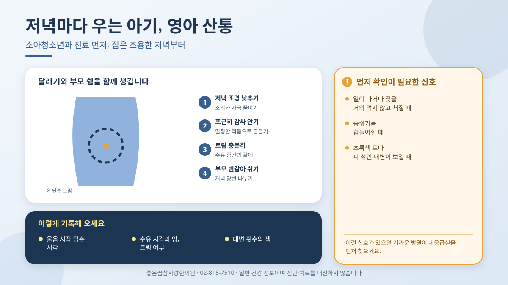

이종호 한의사 감수좋은꿈참사랑한의원 대표원장 (한의사 면허번호 19769)발행 2026-11-26 · 수정 2026-11-26
이 글의 차례
해가 지고 창밖이 어둑해질 무렵, 거실에 불을 켜자마자 아기가 울기 시작합니다. 수유를 해도, 기저귀를 갈아도, 안고 흔들어도 얼굴이 빨개지도록 웁니다. 다리를 배 쪽으로 끌어당기고 주먹을 꼭 쥔 채요. 부모는 아기를 안고 거실을 몇 바퀴째 돌다가 '내가 뭘 잘못하고 있는 걸까' 하는 생각에 마음이 무너집니다.
이 이야기는 진료실에서 아기 부모님께 생각보다 자주 듣습니다. 대개는 아기 때문이 아니라 엄마나 아빠의 손목, 어깨, 허리, 잠 때문에 오셨다가 이야기 끝에 꺼내십니다. "요즘 아기가 저녁마다 너무 울어서요." 그 말에 담긴 피로와 걱정을 저도 압니다.
먼저 꼭 드리고 싶은 말씀이 있습니다. 저녁마다 이어지는 울음은 부모가 무언가를 잘못해서 생기는 일이 아닙니다. 그리고 아기의 울음이 걱정될 때 가장 먼저 찾아야 할 곳은 한의원이 아니라 소아청소년과입니다. 이 글은 그 진료를 받으면서 집에서 알아 두면 좋은 내용을 정리한 것입니다.
영아 산통은 어떤 울음인가요
영아 산통은 특별한 병이 있는 것이 아닌데도 건강한 아기가 하루 몇 시간씩 달래지지 않고 우는 상태를 부르는 말입니다. 흔히 생후 몇 주 무렵 시작해 점점 심해졌다가, 서너 달 무렵이면 많이 줄어드는 흐름을 보입니다. 이름에 '산통'이 들어가지만 배가 아파서 우는지는 아직 분명하지 않습니다.
울음에는 몇 가지 공통점이 있습니다. 주로 늦은 오후나 저녁에 몰리고, 갑자기 시작해 쉽게 멈추지 않습니다. 얼굴이 빨개지고 다리를 배 쪽으로 끌어당기거나 등을 활처럼 휘기도 합니다. 배에 가스가 차서 방귀를 뀌기도 하는데, 이것이 원인인지 많이 울면서 공기를 삼킨 결과인지는 구분이 어렵습니다.
중요한 것은 울음 사이사이의 모습입니다. 울지 않을 때는 젖이나 분유를 잘 먹고, 체중이 꾸준히 늘고, 눈을 맞추며 편안해 보인다면 영아 산통일 가능성을 생각하게 됩니다. 반대로 하루 종일 처지거나 먹는 양이 줄었다면 다른 이유를 먼저 살펴야 합니다.
왜 저녁마다 이렇게 울까요
영아 산통의 원인은 한 가지로 정리되지 않습니다. 여러 이유가 겹친다고 보는 시각이 많습니다. 태어난 지 얼마 안 된 아기는 장이 음식과 가스를 다루는 데 아직 서툴고, 낮 동안 받은 빛과 소리, 손길 같은 자극을 스스로 정리하는 힘도 약합니다.
하루가 저물 무렵이면 낮 동안 쌓인 자극이 한꺼번에 몰려오듯 아기가 버거워한다고 설명하기도 합니다. 그래서 저녁의 소란스러운 집안 분위기, 밝은 조명, 여러 사람이 번갈아 안는 일이 울음을 더 길게 만들 때가 있습니다.
수유와 관련된 부분도 있습니다. 젖병 꼭지 구멍이 맞지 않아 공기를 많이 삼키거나, 급하게 먹고 트림을 충분히 못 한 경우 배가 불편해 보일 수 있습니다. 드물게는 분유나 엄마가 먹은 음식 속 단백질에 아기가 예민하게 반응하는 경우도 있는데, 이것은 소아청소년과에서 판단받는 것이 좋습니다.
한의학에서는 예부터 밤에 우는 아기를 '야제'라고 부르며 배가 차거나, 열이 많거나, 놀람이 쌓인 모습으로 나누어 설명해 왔습니다. 이것은 아기의 모습을 관찰하는 오래된 틀이지 병명을 붙이는 진단은 아닙니다. 지금은 이 관찰을 생활 환경을 돌아보는 데 참고하는 정도로 봅니다.
영아 산통과 헷갈리기 쉬운 울음
모든 저녁 울음이 영아 산통은 아닙니다. 배가 고파서, 졸린데 잠들지 못해서, 기저귀가 불편해서, 덥거나 추워서 우는 일도 흔합니다. 이런 울음은 원인을 해결하면 비교적 빨리 잦아듭니다.
역류가 심한 아기는 먹은 뒤 자주 게워 내고 수유 중에 몸을 뒤로 젖히며 울기도 합니다. 젖이나 분유의 양이 부족하면 먹고 나서도 금방 보채고 체중 증가가 더딥니다. 변비가 있거나 장에 탈이 났을 때도 배를 만지면 싫어하고 크게 웁니다.
열이 나거나, 숨쉬기를 힘들어하거나, 평소와 달리 축 처지는 울음은 영아 산통과 다르게 보아야 합니다. 그래서 아기의 울음이 길어지면 원인을 혼자 짐작하기보다 소아청소년과에서 한 번 진찰을 받아 다른 이유를 가려 두는 것이 부모 마음에도 편합니다.
먼저 이렇게 여쭙니다
부모님께서 아기 이야기를 꺼내시면 저는 먼저 소아청소년과 진료를 받으셨는지부터 여쭙니다. 그다음 함께 정리해 보는 질문은 대략 이렇습니다.
- 울음이 하루 중 언제 시작해 얼마나 이어지나요?
- 울지 않을 때는 잘 먹고, 잘 자고, 편안해 보이나요?
- 수유는 어떤 방식으로, 몇 시간 간격으로 하시나요?
- 트림은 잘 하나요? 먹은 뒤 자주 게워 내지는 않나요?
- 대변의 횟수와 색, 모양은 어떤가요?
- 영유아 검진이나 진료에서 체중이 잘 늘고 있다고 들으셨나요?
여기에 더해 부모님 자신의 상태도 여쭙니다. 하루에 몇 시간쯤 이어서 주무시는지, 혼자 아기를 보는 시간이 얼마나 되는지, 끼니는 거르지 않는지요. 아기를 달래는 힘은 결국 부모의 몸과 마음에서 나오기 때문입니다.
일상에서 먼저 해 볼 수 있는 것
영아 산통에 딱 맞는 한 가지 방법은 없습니다. 아기마다 편안해하는 방식이 다르니, 아래 방법을 하나씩 해 보고 우리 아기에게 맞는 것을 찾아가시면 됩니다. 한 가지를 너무 짧게 바꾸기보다 몇 분은 이어서 해 보는 것이 좋습니다.
- 조명을 낮추고 텔레비전 소리를 줄여 저녁 집안을 조용하게 만들기
- 속싸개로 몸을 포근하게 감싸 안기(엉덩이와 다리는 자유롭게)
- 쉬 소리나 일정한 백색 소음을 낮게 들려주기
- 안아서 천천히 걷거나 일정한 리듬으로 부드럽게 흔들기
- 수유 중간과 끝에 트림을 충분히 시키기
- 아기가 깨어 있을 때 보호자가 지켜보며 엎드려 놀기 시간 갖기
아기를 세게 흔드는 것은 피해야 합니다. 울음이 길어지면 부모도 지치고 손에 힘이 들어가기 쉽습니다. 마음이 한계에 왔다고 느껴지면 아기를 안전한 아기 침대에 눕히고 잠시 다른 방에서 숨을 고르셔도 괜찮습니다. 몇 분 쉬고 돌아오는 것은 아기를 위한 일이기도 합니다.
배를 따뜻하게 해 주고 싶은 마음에 핫팩이나 뜨거운 물주머니를 쓰시는 분도 계신데, 아기 피부는 얇아서 데기 쉽습니다. 따뜻한 손바닥을 배 위에 가만히 얹어 주거나, 기저귀를 갈 때 배꼽 둘레를 시계 방향으로 아주 부드럽게 쓸어 주는 정도가 좋습니다.
분유를 바꾸거나 모유 수유 중인 엄마가 특정 음식을 끊는 일은 혼자 결정하기보다 소아청소년과 선생님과 상의해서 정하시길 권합니다. 이것저것 자주 바꾸면 오히려 아기 배가 적응할 틈이 없을 수 있습니다.
저녁마다 같은 순서를 만들어 보세요
울음이 시작되는 시간이 어느 정도 정해져 있다면, 그보다 조금 이른 시각부터 집안을 저녁 모드로 바꿔 두는 것이 도움이 될 수 있습니다. 해 질 무렵 커튼을 치고, 조명을 낮추고, 큰 소리가 나는 집안일은 낮으로 옮겨 봅니다.
그다음 매일 비슷한 순서를 이어 갑니다. 기저귀를 갈고, 미지근한 물로 짧게 씻기고, 속싸개로 감싸고, 조용한 방에서 수유하고, 트림을 시키는 식입니다. 아기는 같은 순서가 반복되면 다음에 올 일을 몸으로 익혀 가고, 그것이 마음을 가라앉히는 데 보탬이 되기도 합니다.
순서를 정할 때는 부모가 지킬 수 있는 만큼만 정하는 것이 좋습니다. 너무 촘촘한 계획은 하루만 어긋나도 부모를 더 지치게 합니다. 서너 단계만 정해 두고, 날마다 조금씩 달라져도 괜찮다고 여기시면 됩니다.
자주 듣는 말, 이렇게 생각해 보세요
"너무 안아 줘서 손 탄 거야"라는 말을 들으면 부모는 안아 주는 것마저 망설이게 됩니다. 하지만 이 시기의 아기에게 안기는 경험은 버릇이 아니라 안정을 찾는 방법입니다. 우는 아기를 안아 달래는 것은 자연스러운 돌봄입니다.
"엄마 젖이 부족해서 그래"라는 말도 마음을 아프게 합니다. 수유량이 정말 부족한지는 체중 증가와 기저귀 젖는 횟수로 확인할 수 있습니다. 걱정되면 소아청소년과에서 체중을 재어 보고 이야기를 나눠 보세요. 짐작만으로 스스로를 탓하지 않으셨으면 합니다.
"배가 차서 그러니 배를 뜨겁게 해 줘야 한다"는 말도 종종 들립니다. 아기의 배를 따뜻하게 감싸 주는 마음은 좋지만, 뜨거운 물건을 직접 대는 것은 화상 위험이 있습니다. 방 온도를 알맞게 맞추고 배를 얇은 천으로 덮어 주는 정도면 충분합니다. 주변의 여러 조언은 우리 아기에게 맞는지 소아청소년과 선생님께 한 번 여쭤 보고 골라 쓰시면 됩니다.
부모의 쉼도 돌봄의 일부입니다
영아 산통이 있는 집은 저녁 시간이 전쟁처럼 흘러갑니다. 이 시기를 견디는 데 가장 중요한 것 가운데 하나는 부모가 번갈아 쉬는 것입니다. 저녁 두세 시간을 나눠 맡고, 맡지 않은 사람은 방에 들어가 귀마개를 하고 잠시라도 눈을 붙이시길 권합니다.
주변에 도움을 청하는 것도 용기입니다. 가족이나 가까운 사람이 한 시간만 아기를 봐 주어도 샤워를 하고 따뜻한 밥을 먹을 수 있습니다. 그 한 시간이 다음 날 저녁을 버티는 힘이 됩니다.
부모님 가운데는 아기를 오래 안아 손목과 어깨, 허리가 아파 오시는 분이 많습니다. 아기를 안을 때는 손목만으로 받치기보다 팔 전체와 몸통에 붙여 안고, 수유 쿠션이나 아기띠를 활용해 무게를 나누면 몸이 한결 덜 지칩니다.
우울하고 아무것도 하기 싫은 마음이 두 주 넘게 이어지거나, 아기를 돌보는 일이 두렵게 느껴진다면 혼자 견디지 마시고 산부인과나 정신건강의학과, 지역 보건소 상담을 꼭 이용해 보세요. 출산 뒤 마음이 흔들리는 것은 흔한 일이고, 도움을 받으면 한결 수월해질 수 있습니다.
한의원에서 함께 살필 수 있는 경우
- 아기를 안고 달래느라 손목, 어깨, 허리가 아픈 부모
- 밤잠이 끊기면서 낮에 머리가 무겁고 멍한 부모
- 출산 뒤 기운이 돌아오지 않아 쉽게 지치는 엄마
- 소아청소년과 진료를 받은 뒤 생활 관리를 함께 정리하고 싶은 경우
좋은꿈참사랑한의원에서는 아기의 울음 자체를 한의원 치료로 바로 해결하려 하지 않습니다. 아기의 상태는 소아청소년과의 판단을 먼저 따르고, 진찰 없이 영아에게 한약이나 침을 권하지 않습니다.
부모님이 오시면 맥을 짚고 잠, 식사, 통증이 있는 자리를 차례로 살핍니다. 진찰한 내용을 바탕으로 침이나 온열 관리, 자세 조정, 한약 상담 가운데 지금 상태에 맞는 것을 함께 정합니다. 모유 수유 중이라면 한약은 수유 여부와 드시는 약을 모두 확인한 뒤 신중히 상의합니다.
이렇게 기록해 오시면 상담이 쉬워집니다
울음은 기록해 보면 생각보다 규칙이 보이기도 합니다. 소아청소년과에 가실 때도, 부모님 진료 때도 일주일 정도의 간단한 기록이 큰 도움이 됩니다.
- 울음이 시작된 시각과 멈춘 시각
- 수유 시각과 양, 트림 여부
- 대변 횟수와 색
- 울 때 해 본 방법과 그나마 잦아든 방법
- 집안 분위기(손님, 외출, 밝은 조명 등)
- 부모가 잔 시간과 몸에서 아픈 곳
기록이 빠진 날이 있어도 괜찮습니다. 아기가 우는 동안 휴대폰 메모에 시각만 적어 두셔도 충분합니다. 나중에 펼쳐 보면 '이 시간대에는 이렇게 하면 조금 낫구나' 하는 실마리가 생깁니다.
이 시기는 지나갑니다
매일 저녁이 끝나지 않을 것처럼 느껴지지만, 영아 산통은 대부분 시간이 지나며 잦아드는 흐름을 보입니다. 그동안 부모가 할 일은 아기를 안전하게 지키고, 다른 원인을 소아청소년과에서 가려 두고, 서로 번갈아 쉬는 것입니다.
오늘 저녁에는 조명을 한 단계 낮추고, 누가 몇 시부터 몇 시까지 맡을지 정해 보세요. 그 작은 약속이 이 시기를 조금 덜 외롭게 만들어 줍니다. 아기도 부모도 오늘 하루 정말 애쓰셨습니다. 잘 버티고 계신 겁니다.
이런 증상은 먼저 확인이 필요합니다
- 열이 나거나, 젖과 분유를 거의 먹지 않고 축 처지거나, 숨쉬기를 힘들어하는 경우
- 초록색 토를 하거나 뿜듯이 토하기를 반복하고, 대변에 피가 섞여 나오는 경우
이런 신호가 있으면 한의원보다 가까운 병원이나 응급실을 먼저 찾으세요.
함께 읽으면 좋은 글
- 아기를 안고 달래느라 손목과 어깨가 아픈 부모는 자세를 어떻게 점검하나요?
- 출산 뒤 아기를 안다가 손목과 손가락이 아플 때는 어떻게 하나요?
- 아이가 잠투정이 심하고 자다가 자주 깰 때는 어떤 점을 살펴보나요?
- 아이가 자주 토하고 조금만 먹어도 게워 낼 때는 무엇을 살피나요?
- 아이를 씻기고 안아 올릴 때 허리를 숙이는 동작이 반복되면 어떻게 하나요?

여쭙는 것
- 울음이 하루 중 언제 시작해 얼마나 이어지나요?
- 울지 않을 때는 잘 먹고, 잘 자고, 편안해 보이나요?
- 수유는 어떤 방식으로, 몇 시간 간격으로 하시나요?
생활에서 해 볼 것
- 조명을 낮추고 텔레비전 소리를 줄여 저녁 집안을 조용하게 만들기
- 속싸개로 몸을 포근하게 감싸 안기(엉덩이와 다리는 자유롭게)
- 쉬 소리나 일정한 백색 소음을 낮게 들려주기
한의원에서 함께 살필 것
- 아기를 안고 달래느라 손목, 어깨, 허리가 아픈 부모
- 밤잠이 끊기면서 낮에 머리가 무겁고 멍한 부모
- 출산 뒤 기운이 돌아오지 않아 쉽게 지치는 엄마
먼저 확인이 필요한 신호
- 열이 나거나, 젖과 분유를 거의 먹지 않고 축 처지거나, 숨쉬기를 힘들어하는 경우
- 초록색 토를 하거나 뿜듯이 토하기를 반복하고, 대변에 피가 섞여 나오는 경우
한눈에 보는 표
| 구분 | 핵심 |
|---|---|
| 여쭙는 것 | 울음이 하루 중 언제 시작해 얼마나 이어지나요? 울지 않을 때는 잘 먹고, 잘 자고, 편안해 보이나요? |
| 생활에서 해 볼 것 | 조명을 낮추고 텔레비전 소리를 줄여 저녁 집안을 조용하게 만들기 속싸개로 몸을 포근하게 감싸 안기(엉덩이와 다리는 자유롭게) |
| 한의원에서 함께 살필 것 | 아기를 안고 달래느라 손목, 어깨, 허리가 아픈 부모 밤잠이 끊기면서 낮에 머리가 무겁고 멍한 부모 |
| 먼저 확인이 필요한 신호 | 열이 나거나, 젖과 분유를 거의 먹지 않고 축 처지거나, 숨쉬기를 힘들어하는 경우 초록색 토를 하거나 뿜듯이 토하기를 반복하고, 대변에 피가 섞여 나오는 경우 |
자주 묻는 질문
영아 산통이 있는 아기에게 한약을 먹일 수 있나요?
영아는 소아청소년과 진료가 먼저이고, 한의원에서는 진찰 없이 아기에게 한약을 권하지 않습니다. 소아청소년과에서 다른 원인을 확인받은 뒤 상의가 필요하면 아기 상태를 직접 보고 신중히 판단합니다.
분유를 바꾸면 울음이 줄어드나요?
아기에 따라 다르고, 바꾼다고 울음이 줄어든다고 말씀드리기는 어렵습니다. 분유 변경은 소아청소년과 선생님과 상의해서 정하시고, 자주 바꾸지 않는 것이 좋습니다.
영아 산통은 언제쯤 줄어드나요?
흔히 생후 서너 달 무렵 많이 줄어드는 흐름을 보이지만 아기마다 다릅니다. 그 시기가 지나도 울음이 이어지거나 다른 변화가 보이면 소아청소년과에서 다시 확인받으세요.
아기를 오래 안아서 손목이 아픈데 진료를 받아도 되나요?
네, 부모님의 손목과 어깨, 허리는 한의원에서 함께 살필 수 있습니다. 모유 수유 중이시면 먼저 알려 주세요. 침이나 한약을 정할 때 함께 고려합니다.
울 때 아기 배를 마사지해 줘도 되나요?
아기가 편안해한다면 따뜻한 손으로 배꼽 둘레를 아주 부드럽게 쓸어 주는 정도는 괜찮습니다. 아기가 싫어하거나 배가 단단하게 부풀어 있으면 멈추고 소아청소년과에 문의하세요.
좋은꿈참사랑한의원은 재진 때 지난번 이야기부터 이어서 여쭙니다. 진료시간과 예약은 오시는 길에서 확인하세요.
어디서 상담받을 수 있나요?
좋은꿈참사랑한의원은 서울 동작구 만양로2길 2 신성빌딩 3층·5층(서울 동작구 상도동, 7호선 상도역 3번 출구 근처)에 있습니다. 한의사 3명(이종호 대표원장, 조영기 수석진료원장, 정원영 진료원장)이 진료합니다. 진료시간은 평일 09:30~20:00(점심 13:00~14:00), 토·일·공휴일 09:30~15:00이며, 방문 전 전화로 확인을 권합니다. 예약은 네이버 예약, 카카오톡 상담, 전화 02-815-7510로 받습니다.
이 글은 일반적인 건강 정보이며 개인의 진단이나 치료를 대신하지 않습니다. 증상이 있거나 복용 중인 약이 있다면 진료를 통해 확인하세요. 치료 효과는 개인마다 다를 수 있습니다.
작성 기준: 일반적으로 알려져 있는 건강 정보를 참고해 정리했습니다(대표원장 감수). 증상 기록은 1~2주 동안 하루 1회, 비슷한 시간에 적어 오시면 지난 상태와 비교하기 쉽습니다.